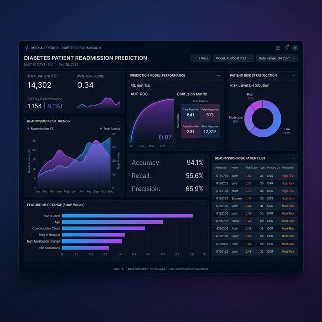

Soy un Científico de datos enfocado en construir sistemas de datos que generan impacto real — desde la exploración hasta la producción. Mi background en el sector incluye 5 años trabajando en entornos de alta exigencia y datos críticos, forjando una capacidad analítica orientada a consecuencias e impacto real.
Con 5 años de experiencia como Licenciado en Enfermería, mi transición hacia la Ingeniería en Sistemas y la Ciencia de Datos nace de una profunda fascinación por la tecnología y la búsqueda de resolver problemas complejos a escala.
Mi resiliencia en entornos críticos y la capacidad de colaborar en equipos multidisciplinarios son el núcleo de mi trabajo. Hoy, combino el rigor de la estadística y el álgebra lineal con una visión pragmática para construir soluciones escalables que impacten donde más importa.
Enfocado en la convergencia de la Ingeniería de Software y Data Science, integrando modelos predictivos en arquitecturas de sistemas escalables.
Formación y experimentación continua: Implementando activamente nuevas tendencias como agentes de IA, arquitecturas RAG y herramientas de MLOps para optimizar flujos de trabajo.
Abierto a colaborar en proyectos tecnológicos desafiantes donde pueda aplicar mi capacidad analítica, curiosidad técnica y resiliencia en equipos de alto rendimiento.
5 años de trayectoria como Licenciado en Enfermería, liderando procesos bajo presión y garantizando la integridad de datos clínicos en sistemas de salud pública.
Especialista en comunicación efectiva y trabajo multidisciplinario, habilidades transferibles al ciclo de desarrollo de software y gestión de stakeholders.
Grado en Enfermería por la Universidad de Sonora.
Desarrollo de bases sólidas en metodología de la investigación y análisis de datos aplicados a la salud.
Validador y Asistente RAG de Normatividad en Salud con IA. Automatiza auditorías clínicas contra regulaciones federales.

Modelo predictivo con enfoque hospitalario entrenado usando XGBoost para estimar la probabilidad de reingreso en pacientes diabéticos, balanceando clases con SMOTE.